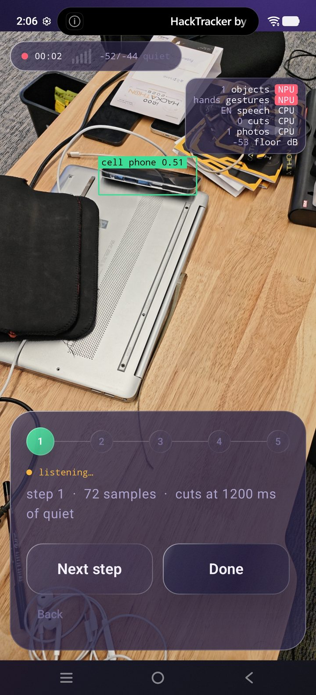
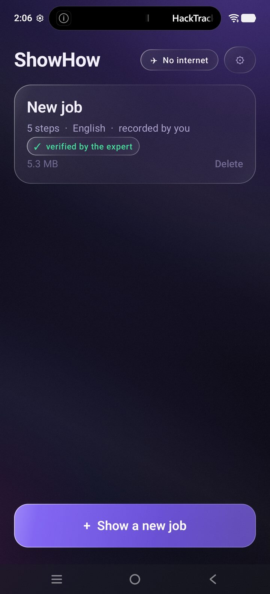
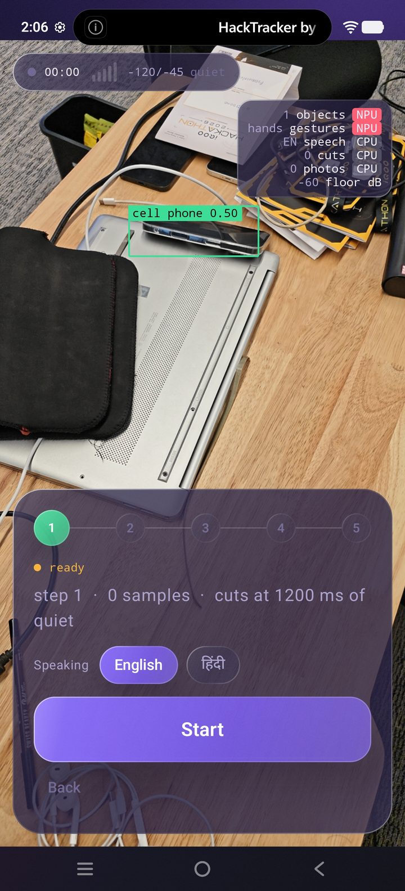
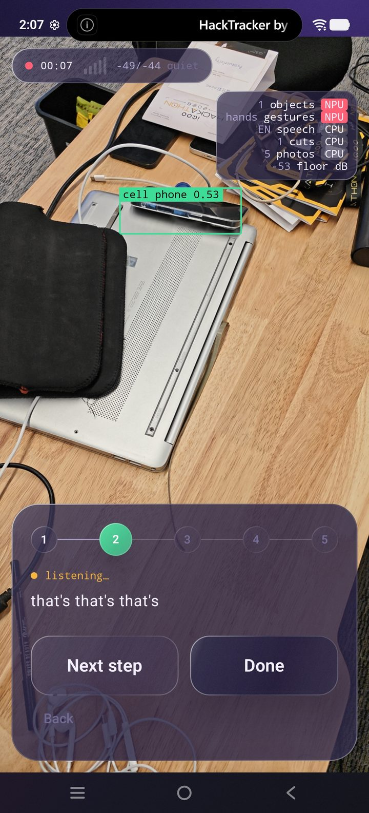
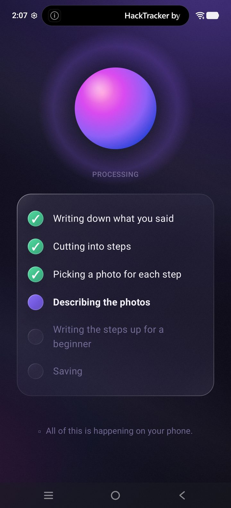
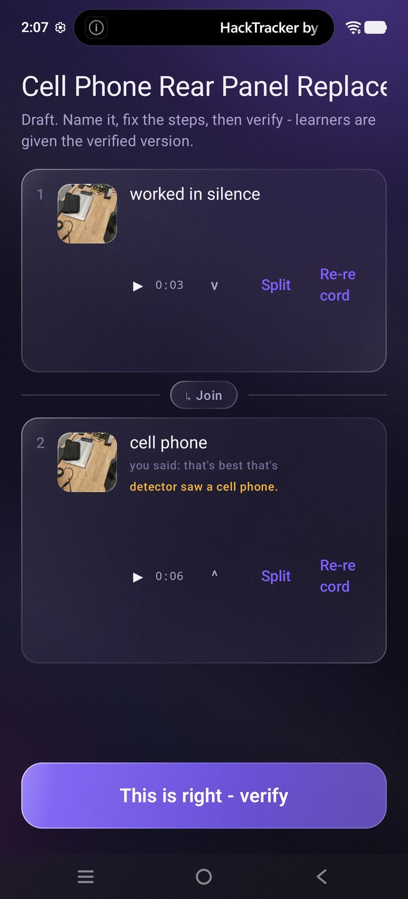
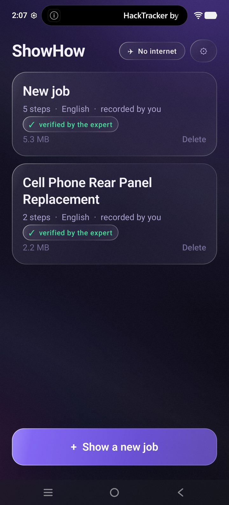
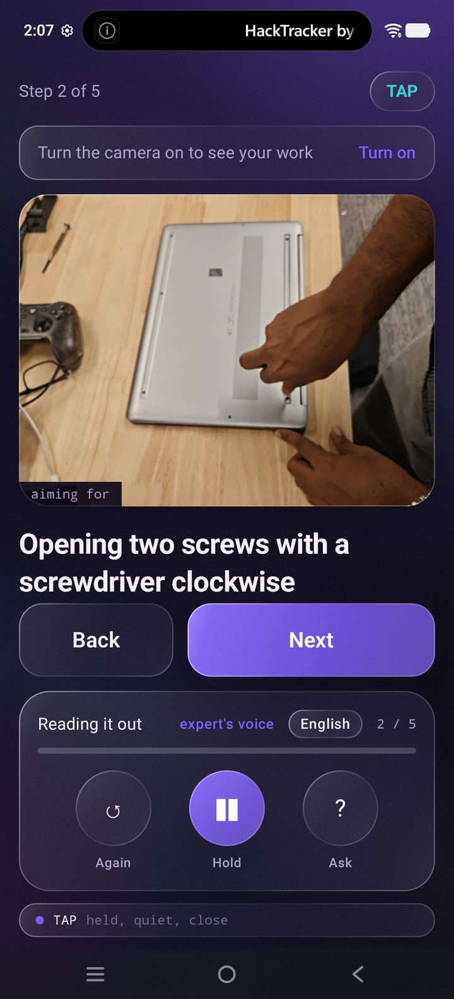

An expert does a job once and narrates it in Hindi or English. The phone turns that single take into a step-by-step guide — one photo and one slice of her own voice per step. Anyone else then runs the guide hands-free.
There is no INTERNET permission to revoke.
Experience both sides of the product: Show Mode (expert records a take) and Guide Mode (hands-free execution with 7-signal sensor fusion).

Ask any question. Answers are strictly grounded in the expert's words or visual facts, never hallucinated:
These are product claims made to the iQOO hackathon jury. Breaking any one is worse than shipping less.
The AndroidManifest declares only CAMERA and RECORD_AUDIO. It explicitly removes INTERNET and ACCESS_NETWORK_STATE using tools:node="remove" so no merged transitive library can inject network access.
The step cutter is a pure silence run detector (≥1200ms) cross-referenced with a Hindi/Marathi linking-word vocabulary (phir, ab, uske baad). It contains zero video models and runs in milliseconds on a five-year-old budget phone.
Switching between EASY, HANDS, TALK, and TAP uses plain boolean logic over Schmitt triggers with a 400ms dwell latch. Decides in well under 10 milliseconds and guarantees zero UI flicker.
There is no disabled button in the entire app. Anything the phone cannot honestly measure (gloves, driving, user age, or task correctness) is left as a transparent setting, never an AI guess.
A missing model is never replaced by a fake — Fakes.kt was deleted on purpose. Every model runs locally on the iQOO 15 hardware.
| Model | Job | Chip Target | If Model is Absent |
|---|---|---|---|
Vosk ASR (vosk-android) |
Hindi and English speech recognition with per-word millisecond timings | CPU | Empty transcripts; silence detector continues to slice steps |
Gemma 3 1B int4 (mediapipe-tasks-genai) |
Rewrites instructions to English, titles guide, answers learner questions | GPU (OpenCL) | Steps stay in the expert's raw spoken words; no question answering |
Fine-Tuned Screw Detector (tasks-vision) |
Detects screwdriver + 5 screw types (philips, pozidriv, torx, hex, square) | NPU / GPU | No tool bounding boxes; COCO still identifies generic workbench items |
COCO Object Detector (tasks-vision) |
Identifies laptop, keyboard, mouse, person in the frame | NPU | Tool boxes still draw; workbench components go unnamed |
Gesture Recognizer (tasks-vision) |
Palm (next step) and Fist (prev step) for hands-free navigation | GPU | Gesture navigation disabled; on-screen buttons and speech still work |
| Scene Check (Zero Model File) | Compares live camera bench against expert's step photo | dHash + HSV | Never absent — pure algorithmic perceptual hash and color histogram |
Captured directly from the running iQOO 15 build. Click any screen to view full resolution.







For 10.5 hours of the hackathon, compiling is forbidden. Task Lens reads every tunable parameter from policy.json, watched live with a FileObserver.
The ultimate proof of structured procedural knowledge: a Franka Panda robot arm reads guide.json and executes the repair in PyBullet simulation.
tools/sim/guide_to_program.py reads the expert guide JSON, maps normalized 2D camera detection bounding boxes to 3D tabletop coordinates, and translates action verbs into robot motion primitives:
Anything the translator cannot resolve confidently falls back to INSPECT — the arm hovers to view the workpiece without touching it. No guessed manipulations.
Office Kit provides screen mirroring, file transfer, remote control, and shared clipboard. Verified by HackTracker hardware telemetry.
Rather than using cables, every model bundle (coach.task, vosk-model) and every tuning revision was transferred via Office Kit File Transfer, building genuine continuous device usage from hour one.
Strategic scheduling around compilation windows. Red Light is spent tuning and polishing without touching a compiler.